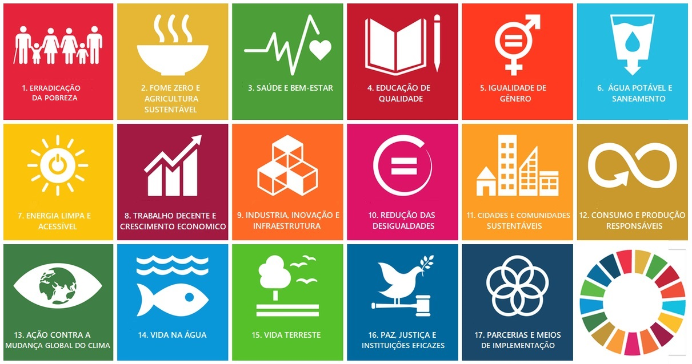

A insegurança alimentar é um assunto sério e merece mais visibilidade dos cidadãos e do governo, muitas pessoas sofrem com a incerteza e falta de comida, a insegurança alimentar tem um impacto negativo na saúde, na educação e na economia das pessoas. Ela pode levar a doenças, problemas de aprendizagem e baixa produtividade.
Até 2030, a ONU quer realizar as metas e contribuir para um futuro mais satisfatório, o Combate à fome e a Agricultura Sustentável são alguns dos Objetivos de Desenvolvimento Sustentável(ODS 2) da ONU, os Objetivos de Desenvolvimento Sustentável tem a proposta de acabar com a pobreza, proteger o meio ambiente e garantir que as pessoas possam desfrutar de paz.

Você pode ajudar a melhorar a vida das pessoas, seja doando ou compartilhando as informações
Este site tem o objetivo de informar e conscientizar as pessoas sobre o problema da insegurança alimentar. Queremos contribuir para o combate a esse problema e garantir que todos tenham acesso à alimentos suficientes, e uma vida de qualidade.